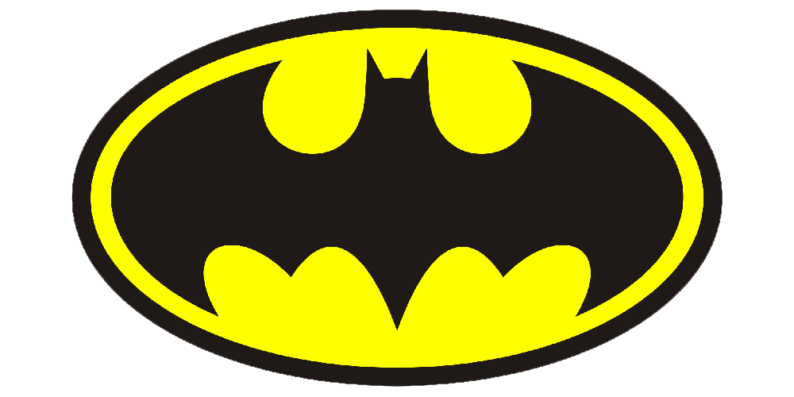

Batman is a superhero who appears in American comic books published by DC Comics . Batman was created by artist Bob Kane and writer Bill Finger, and debuted in the 27th issue of the comic book Detective Comics on March 30, 1939. In the DC Universe continuity, Batman is the alias of Bruce Wayne, a wealthy American playboy, philanthropist, and owner of Wayne Enterprises based in Gotham City.
The fictional superhero Batman, who appears in American comic books published by DC Comics, has appeared in various films since his inception. Created by Bob Kane and Bill Finger,[1] the character first starred in two serial films in the 1940s: Batman and Batman and Robin. The character also appeared in the 1966 film Batman, which was a feature film adaptation of the 1960s Batman TV series starring Adam West and Burt Ward, who also starred in the film.